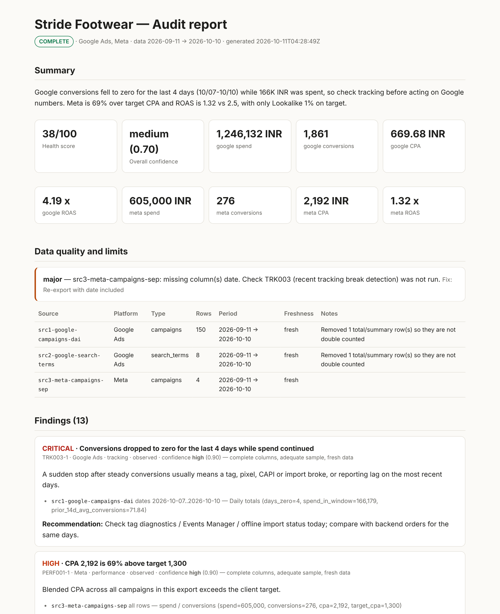

AI Google Ads audit with Claude Code
Run an evidence-backed Google Ads audit in minutes: tracking breaks, wasted spend, search-term waste, budget limits and CPA/ROAS against target, with the exact rows behind every finding.
1. Export two reports
| Report | Columns | Segment |
|---|---|---|
| Campaigns | Campaign, Campaign status, Budget, Cost, Impr., Clicks, Conversions, Conv. value, Search impr. share, Search lost IS (budget), Search lost IS (rank) | Day, last 30–90 days |
| Search terms | Search term, Match type, Campaign, Ad group, Cost, Clicks, Impr., Conversions | None |
The default Google Ads download (UTF-16, with report title rows and a Total row) works as-is.
2. Run the audit
/ads audit google ./exportsOn first run you set CPA/ROAS targets and monthly budgets. The audit is read-only.
3. What it checks automatically
| Check | What it catches |
|---|---|
| Tracking break | Conversions drop to zero for consecutive days while spend continues |
| Zero-conversion spend | Campaigns spending above a waste threshold with no conversions; awareness campaigns are flagged separately |
| CPA / ROAS vs target | Blended and campaign-level performance against your targets |
| Budget-limited | Campaigns losing 20%+ impression share to budget while converting at or below account CPA |
| Rank-limited | Campaigns losing 40%+ impression share to ad rank |
| Search-term waste | Terms that spent at least one CPA with no conversions, ranked by spend |
| CTR outliers, concentration, pacing | Campaigns far below sibling CTR, one campaign dominating spend, month-to-date pacing |
Claude then works through a Google-specific checklist: primary vs secondary conversion actions, duplicate conversions, bidding vs data volume, brand cannibalisation in Performance Max, location and network settings. Every judgement finding still has to cite data.
4. Read the report
Each finding shows its severity, the evidence rows, an impact range with the method used, and a confidence score with reasons. Missing columns and stale exports are listed at the top, not hidden.

Install
claude plugin marketplace add nirbanravi/ppc-agent
claude plugin install spendsentry@spendsentryRun these in a terminal with Claude Code installed. Then open a project folder, start claude, and type /ads audit google ./exports. Python 3.9+ is the only other requirement.
FAQ
How do I audit a Google Ads account with AI?
Export a campaign report segmented by day and a search terms report from Google Ads, then run /ads audit google ./exports in Claude Code with SpendSentry installed. You get scored findings with the rows that support each one.
Which Google Ads reports does the audit need?
A campaign report by day with Cost, Impressions, Clicks, Conversions, Conversion value, Budget and Campaign status, plus a search terms report. Adding Search impression share and Search lost IS (budget/rank) unlocks the budget- and rank-limit checks.
Does the AI audit replace a PPC specialist?
No. The automated checks catch measurable problems fast, and Claude adds judgement on top, but every finding comes with evidence so a specialist can confirm or reject it quickly.
Is it safe to connect my Google Ads account?
Use exports or read-only access. Google's official Google Ads MCP server is read-only, and SpendSentry blocks write tools unless you approve each exact change.